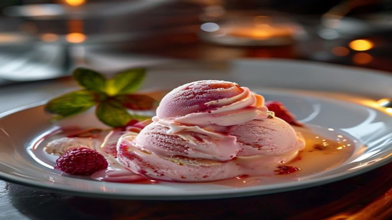

Viral Protein Ice Cream | 3-Ingredient Healthy Dessert
This viral 3-ingredient protein ice cream has taken the internet by storm! Thick, creamy, and packed with protein — it's like eating real ice cream but with macro-friendly ingredients.
Ingredients
- 1 frozen banana
- 1 scoop protein powder (any flavor)
- 1/4 cup milk of choice
- Optional: 1 tablespoon peanut butter
- Optional toppings: granola, chocolate chips, berries
Instructions
This viral protein ice cream has millions of views for a reason — it tastes like real ice cream but packs 25+ grams of protein! Just 3 ingredients and 5 minutes.
Slice a ripe banana and freeze for at least 4 hours (overnight is best). The riper the banana, the sweeter your ice cream.
Add frozen banana, protein powder, and milk to a blender or food processor. Blend on low, scraping down sides as needed.
Blend until thick and creamy — it should look and feel like soft serve. Don't over-blend or it will become too liquid.
Scoop into a bowl and add your favorite toppings: granola, chocolate chips, berries, or a drizzle of peanut butter.
Enjoy immediately as soft serve, or freeze for 30 minutes for a firmer scoop! Try different protein flavors — chocolate and vanilla are the best. This is your new post-workout treat!